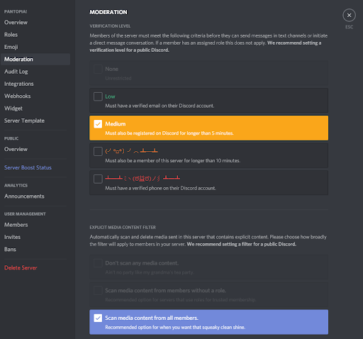

- Academia de moderadores
- Basics
- Setup and Function
- Advanced Community Management
- 301: Implementing Verification Gates
- 302: Developing Moderator Guidelines
- 303: Facilitating Positive Environments
- 310: Managing Moderation Teams
- 311: Understanding and Avoiding Moderator Burnout
- 312: Internal Conflict Resolution
- 313: How to Moderate Voice Channels
- 314: Training and Onboarding New Moderators
- 321: Auto Moderation in Discord
- 322: Usage and Benefits of Webhooks and Embeds
- 323: Usage of XP Systems
- 331: Community Engagement
- 332: Fostering Healthy Communities
- 333: Planning Community Events
- 334: Community Partnerships
- 341: Understanding Your Community Through Insights
- Moderation Seminars
- 401: Transparency in Moderation
- 403: Sensitive Topics
- 405: Practicalities of Moderating Adult Channels
- 407: Managing Exponential Membership Growth
- 432: Internationalization of a Community
- 441: Community Governance Structures
- 442: Using Insights to Improve Community Growth and Engagement
- 443: Ban Evasion and Advanced Harassment
- 451: Reddit x Discord
- 452: Twitch x Discord
- 453: Patreon x Discord
- 454: Bringing Other Communities To Discord
- 455: Schools x Discord
321: Auto Moderation in Discord
So, you’ve set up your server and established some rules! The next step is enforcing those rules. A large component of enforcing your rules and protecting your server is auto moderation. This article will cover general and specific implementations and configurations of Auto moderation both with the aid of tools Discord has readily available, and tools provided by bots. Before reading on, please read the terminology below.
Terminology
‘Raid’ ‘Raider’ - A raid is where a large number of users will join a server with the express intention of causing issues for the server. A raider is an account engaging in this activity.
‘Alt’ ‘Alt account’ - An alt is a throwaway account owned by a discord user. In the context of raids, these alts are made en masse to engage in raiding.
"Self-bot" - A self bot is an account that’s being controlled via custom code or tools. This is against Discord’s TOS. In the context of raids and moderation, these accounts are automated to spam, bypass filters or engage in other annoying activities.
Why is Auto Moderation Important?
Auto Moderation as a system is integral to the way many servers run on Discord. The security that auto moderation can provide to your server can give your users a much better experience in your community, make your moderator’s jobs easier, and prevent malicious users from doing damage to your server or even getting into your server.
Auto Moderation vs. Manual Moderation
If you’re a well established server, you’ll likely already have a moderator team. You may wonder, why should I use auto moderation? I already have moderators? Auto moderation isn’t a replacement for manual moderation, rather, it’s something that enriches it. Your moderation team can continue to make context-based, informed decisions within your server, and auto moderation servers to make that process easier for them while dealing with common issues faster than they may be able to.
Knowing What’s Right for Your Server
Different servers will warrant different levels of auto moderation. It’s important to be able to evaluate your server and consider what level of auto moderation will suit it. Below are the different kinds of servers on Discord and the recommended auto moderation systems for them.
If you run a Discord server with limited invites, where every new member is known, auto moderation won’t be critical unless you have a larger member count. It’s recommended to have some auto moderation, namely text filters and anti-spam.
If you run a Discord server with public invites where new members could be just about anyone, it’s strongly recommended to have anti-spam and text filters as well as some level of member verification. If your server is large (several thousand members) implementing anti-raid features may be necessary. Remember- auto moderation is configurable to your rules, as strict or loose as they may be.
If your Discord server is lucky enough to be Verified or Partnered, you will need to adhere to additional guidelines (Partner Code of Conduct and/or Verified Server Guidelines) to maintain that status. Auto moderation is recommended for these servers to enforce these guidelines, namely anti spam and text filters. If you have a Vanity URL or your server is Discoverable, anti-raid is a must-have to protect your server.
Any community that enables community features in their server settings must also adhere to the Community Server Guidelines, which holds communities to higher standards of overall health and effective moderation.
The Discord Moderation Menu

One of the most powerful tools in auto moderation comes with your server, the moderation tab. Located under the server settings tab, you will find the moderation settings. Within this page are some of the most powerful tools Discord has to offer!
These settings can help keep your Discord server nice and secure without an elaborate setup. The individual settings will be detailed below!
None* - This turns off verification for your server, anyone can join and immediately interact with your server. This isn’t recommended for public servers, as anyone with malicious intent can immediately join and wreak havoc.
Low - This requires people joining your server to have a verified email, this will protect your server from the laziest of malicious users while keeping everything simple and accessible for well-meaning users. This would be a good setting for a small, private server.
Medium - This requires the user to have a verified email address and for their account to be at least 5 minutes old. This will further protect your server from people creating accounts solely to cause problems. This would be a good setting for a moderately sized private server or a small public server.
High - This includes the same protection as both the medium and low verification levels but also adds a 10 minute barrier between someone joining your server and being able to interact. This can give you and anyone else responsible for keeping things clean in your server time to respond to ‘raids’, or large numbers of malicious users joining at once. For legitimate users, you can encourage them to do something with this 10 minute time period such as read the rules and familiarize themselves with informational channels to pass the time until the waiting period is over. This would be a good setting for a large public server.
Highest - This requires a joining user to have a verified phone number in addition to the above requirements. This setting can be bypassed by robust ‘raiders’. This would be a good setting for a private server where security is tantamount, or a public server with custom verification. This requirement is one many normal Discord users won’t fill, by choice or inability.
As a moderator, one common harassment tactic that trolls may take is to post inappropriate gore, shock, or NSFW content that the rest of your server members would not like to see. Discord provides a robust system to scan images and embeds to make sure such images don’t end up on your server.
Don’t scan any media content* - Nothing sent in your server will go through Discord’s automagical image filter. This would be a good setting for a small, private server where only people you trust can post images, videos etc.
Scan media content from users without a role* - Self explanatory, this works well to stop new users from filling your server with unsavoury imagery. When combined with verification methods detailed earlier, this would be a good setting for a moderately sized private or public server.
Scan media content from all members - This setting makes sure everyone, regardless of their roles, aren’t posting unsavoury things in your server. In general, we recommend this setting for ALL servers.
*These settings aren’t allowed for a Community server, Verified server or Partnered server as defined earlier in this article
Once you’ve decided on the base level of auto moderation you want for your server, it’s time to look at the extra levels of auto moderation bots can bring to the table! The next few sections are going to detail the ways in which a bot can moderate.
Bot-Controlled Auto Moderation
If you want to keep your chats clean and clear of certain words, phrases, spam, mentions and everything else that can be misused by would-be troublemakers you’re going to need a little help from a robotic friend or two. A variety of free bots are going to be provided as examples. If you decide to use several bots, you may need to juggle several moderation systems.
When choosing a bot for auto moderation, you should also consider their capabilities for manual moderation (things like managing mutes, warns etc.) and you should find a bot with an infraction/punishment system you and the rest of your moderator team find to be the most appropriate. All of the bots listed in this article have a manual moderation system.
The main and most pivotal forms of auto moderation are:
- Anti-Spam
- Text Filters
- Anti-Raid
- User Filters
Each of these subsets of auto moderation will be detailed below along with recommended configurations depending on your server.
Bots seen in this guide:
- Mee6 - https://mee6.xyz/
- Dyno - https://dyno.gg/
- Giselle - https://docs.gisellebot.com/bot-invite.html
- Gaius Cicereius - https://gaiusbot.me/
- YAGPDB - https://yagpdb.xyz/
- Carl - https://carl.gg/
- Gearbot - https://gearbot.rocks/
This list is not exhaustive. There are plenty of alternatives available online. All of the listed bots are free and public. Some features may be limited to paid additions or private versions of the bots. The content of this article is not endorsed by any bot or company related to the bots.
One of the most common forms of auto moderation is anti-spam, a kind of filter that detects then prevents various kinds of spam. Depending on what bot(s) you’re using, this comes with various levels of configurability.
Spam Type | Mee6 | Dyno | Giselle | Gaius | YAGPDB | Carl | Gearbot |
Fast Messages | No | Yes | Yes**** | Yes | Yes | Yes | No |
Repeated Text | Yes | Yes | Yes**** | Yes | Yes | No | No |
Newline Text | No | No | Yes**** | Yes | No | No | No |
Mentions | Yes | Yes | Yes | Yes | Yes | Yes | Yes* |
Links | Yes* | Yes* | Yes* | Yes | Yes*** | Yes | Yes |
Invites | Yes* | Yes* | Yes* | Yes | Yes | Yes | Yes |
Images | No | Yes | Yes | Yes** | No | Yes | No |
Emoji | Yes | Yes | No | Yes | No | No | No |
*Unconfigurable filters, these will catch all instances of the trigger, regardless of whether they’re spammed or a single instance
**Gaius also offers an additional NSFW filter as well as standard image spam filtering
***YAGPDB offers link verification via google, anything flagged as unsafe can be removed
****Giselle combines Fast Messages and Repeated Text into one filter
Anti-Spam is integral to running a large private server, or a public server. Spam, by definition, is irrelevant or unsolicited messages. This covers a wide base of things on Discord, there are multiple types of spam a user can engage in. The common forms are listed in the table above. The most common forms of spam are also very typical of raids, those being Fast Messages and Repeated Text. The nature of spam can vary greatly but the vast majority of instances involve a user or users sending lots of messages with the same contents with the intent of disrupting your server.
There are subsets of this spam that many anti-spam filters will be able to catch. If any of the following: Mentions, Links, Invites, Emoji, and Newline Text are spammed repeatedly in one message or spammed repeatedly across several messages, they will provoke most Repeated Text and Fast Messages filters appropriately. Subset filters are still a good thing for your anti-spam filter to contain as you may wish to punish more or less harshly depending on the spam. Namely, Emoji and Links may warrant separate punishments. Spamming 10 links in a single message is inherently worse than having 10 emoji in a message.
Anti-spam will only act on these things contextually, usually in an X in Y fashion where if a user sends, for example, 10 links in 5 seconds, they will be punished to some degree. This could be 10 links in one message, or 1 link in 10 messages. In this respect, some anti-spam filters can act simultaneously as Fast Messages and Repeated Text filters.
Sometimes, spam may happen too quickly for a bot to catch up. There are rate limits in place to stop bots from harming servers that can prevent deletion of individual messages if those messages are being sent too quickly. This can often happen in raids. As such, Fast Messages filters should prevent offenders from sending messages; this can be done via a mute, kick or ban. If you want to protect your server from raids, please read on to the Anti-Raid section of this article.
Text filters allow you to control the types of words and/or links that people are allowed to put in your server. Different bots will provide various ways to filter these things, keeping your chat nice and clean.
FIlter | Mee6 | Dyno | Giselle | Gaius | YAGPDB | Carl | Gearbot |
Banned words | Yes | Yes | Yes | Yes | Yes | Yes | Yes |
Whitelist | No | No | Yes | Yes | Yes | No | Yes |
Templates | No | Yes | No | Yes | No | No | No |
Immunity | Yes | Yes | Yes | Yes | Yes | Yes | Yes |
Banned Links | Yes* | Yes* | No | Yes | Yes* | Yes*** | Yes |
Whitelist | Yes | No | No | Yes | Yes** | Yes*** | Yes |
Templates | No | No | No | Yes | Yes** | Yes*** | No |
Invites | Yes | Yes | Yes | Yes | Yes | Yes | Yes |
Extras | Zalgo | Selfbot | Regex | Regex | Files |
*Defaults to banning ALL links
**YAGPDB offers link verification via google, anything flagged as unsafe can be removed
***Setting a catch-all filter with carl will prevent link-specific spam detection
A text filter is integral to a well moderated server. It’s strongly, strongly recommended you use a bot that can filter text based on a blacklist. A Banned words filter can catch links and invites provided http:// and https:// are added to the word blacklist (for all links) or specific full site URLs to block individual websites. In addition, discord.gg can be added to a blacklist to block ALL Discord invites.
A Banned Words filter is integral to running a public server, especially if it’s a Partnered, Community or Verified server, as this level of auto moderation is highly recommended for the server to adhere to the additional guidelines attached to it. Before configuring a filter, it’s a good idea to work out what is and isn’t ok to say in your server, regardless of context. For example, racial slurs are generally unacceptable in almost all servers, regardless of context. Banned word filters often won’t account for context, with an explicit blacklist. For this reason, it’s also important a robust filter also contains whitelisting options. For example, if you add the slur ‘nig’ to your filter and someone mentions the country ‘Nigeria’ they could get in trouble for using an otherwise acceptable word.
Filter immunity may also be important to your server, as there may be individuals who need to discuss the use of banned words, namely members of a moderation team. There may also be channels that allow the usage of otherwise banned words. For example, a serious channel dedicated to discussion of real world issues may require discussions about slurs or other demeaning language, in this exception channel based Immunity is integral to allowing those conversations.
Link filtering is important to servers where sharing links in ‘general’ chats isn’t allowed, or where there are specific channels for sharing such things. This can allow a server to remove links with an appropriate reprimand without treating a transgression with the same severity as they would a user sending a racial slur.
Whitelisting/Blacklisting and templates for links are also a good idea to have. While many servers will use catch-all filters to make sure links stay in specific channels, some links will always be malicious. As such, being able to filter specific links is a good feature, with preset filters (Like the google filter provided by YAGPDB) coming in very handy for protecting your user base without intricate setup however, it is recommended you do configure a custom filter to ensure specific slurs, words etc. that break the rules of your server, aren’t being said.
Invite filtering is equally important in large or public servers where users will attempt to raid, scam or otherwise assault your server with links with the intention of manipulating your user base to join or where unsolicited self-promotion is potentially fruitful. Filtering allows these invites to be recognized, and dealt with more harshly. Some bots may also allow by-server white/blacklisting allowing you to control which servers are ok to share invites to, and which aren’t. A good example of invite filtering usage would be something like a partners channel, where invites to other, closely linked, servers are shared. These servers should be added to an invite whitelist to prevent their deletion.
Raids, as defined earlier in this article, are mass-joins of users (often selfbots) with the intent of damaging your server. There are a few methods available to you in order for you to protect your community from this behavior. One method involves gating your server with verification appropriately, as discussed in DMA 301.You can also supplement or supplant the need for verification by using a bot that can detect and/or prevent damage from raids.
Mee6 | Dyno | Giselle | Gaius | YAGPDB | Carl | Gearbot | |
Raid detection | No | No | Yes | No* | No | No | No |
Raid prevention | No | No | Yes | Yes | No | No | No |
Raid-user detection | No | No | Yes | Yes | No | No | No |
Damage prevention | No | Yes | No | Yes* | No | Yes | No |
Raid anti-spam | No | Yes | Yes | Yes | Yes | No | No |
Raid Cleanup | No | Yes | Yes | Yes | Yes | Yes | Yes |
*Unconfigurable, triggers raid prevention based on user joins & damage prevention based on humanly impossible user activity. Will not automatically trigger on the free version of the bot.
Raid detection means a bot can detect the large number of users joining that’s typical of a raid, usually in an X in Y format. This feature is usually chained with Raid Prevention or Damage Prevention to prevent the detected raid from being effective, wherein raiding users will typically spam channels with unsavoury messages.
Raid-user detection is a system designed to detect users who are likely to be participating in a raid independently of the quantity of frequency of new user joins. These systems typically look for users that were created recently or have no profile picture, among other triggers depending on how elaborate the system is.
Raid prevention stops a raid from happening, either by Raid detection or Raid-user detection. These countermeasures stop participants of a raid specifically from harming your server by preventing raiding users from accessing your server in the first place, such as through kicks, bans, or mutes of the users that triggered the detection.
Damage prevention stops raiding users from causing any disruption via spam to your server by closing off certain aspects of it either from all new users, or from everyone. These functions usually prevent messages from being sent or read in public channels that new users will have access to. This differs from Raid Prevention as it doesn’t specifically target or remove new users on the server.
Raid anti-spam is an anti spam system robust enough to prevent raiding users’ messages from disrupting channels via the typical spam found in a raid. For an anti-spam system to fit this dynamic, it should be able to prevent Fast Messages and Repeated Text. This is a subset of Damage Prevention.
Raid cleanup commands are typically mass-message removal commands to clean up channels affected by spam as part of a raid, often aliased to ‘Purge’ or ‘Prune’.
It should be noted that Discord features built-in raid and user bot detection, which is rather effective at preventing raids as or before they happen. If you are logging member joins and leaves, you can infer that Discord has taken action against shady accounts if the time difference between the join and the leave times is extremely small (such as between 0-5 seconds). However, you shouldn’t rely solely on these systems if you run a large or public server.
Messages aren’t the only way potential evildoers can present unsavoury content to your server. They can also manipulate their Discord username or Nickname to cause trouble. There are a few different ways a username can be abusive and different bots offer different filters to prevent this.
Filter | Mee6 | Dyno | Giselle | Gaius | YAGPDB | Carl | Gearbot |
Bad words | No | No | No | Yes* | Yes | No | No |
Spam | No | No | No | Yes* | Yes** | No | No |
Hoisting | No | No | No | Yes* | Yes** | No | No |
*Gaius can apply same blacklist/whitelist to names as messages or only filter based on items in the blacklist tagged %name
**YAGPDB can use configured word-list filters OR a regex filter
Username filtering is less important than other forms of auto moderation, when choosing which bot(s) to use for your auto moderation needs, this should typically be considered last, since users with unsavory usernames can just be nicknamed in order to hide their actual username.
Which Bot Do I Use?
At the end of the day, the bot you choose, if any, should be one that fits the needs of your community and moderation team the best. Take into consideration what exactly is that you’re using Auto Moderation to solve for and decide if the bot you choose fulfills that need. Keep in mind that Auto Moderation and Auto Moderation bots are not the be-all end-all of moderation for your server; we still recommend having human, manual moderation in order to make sure your moderating decisions have nuance and context where necessary.
It’s recommended you use a bot with a toolset like Gaius’ as you will want a robust and diverse toolset. However, if raiding isn’t a large concern for your server, Gearbot and Giselle are formidable options. Your largest concern in a server of this size is going to be anti-spam and text filters, with user filters as a good bonus. At this scale a self hosted bot may also be a viable option, but such bots aren’t covered in this article.
It’s recommended you use Gaius, YAGPDB, Carl or Giselle. Mee6 and Dyno are also viable options but due to the large number of servers they are in, they are subject to occasional outages. These outages can leave your server unprotected for large amounts of time. As such Giselle, Gaius and Gearbot are good options for their good uptimes. At this server size, you’re likely not going to be largely concerned about anti-raid with anti-spam and text filters being your main focus. User filters, at this size, are largely unneeded.
If your server is small or private, the likelihood of malicious users joining to wreak havoc is rather low. As such, you should choose a bot with general moderation features you like the most and use that for auto moderation. It’s recommended you use Mee6, Dyno, Gaius, YAGPDB, Giselle or Carl, or Gearbot. Your focus here will largely be text filters, as there is generally less incentive and room for spam and raiding in a server of this size.
Configuring Auto Moderation for Listed Bots
First, make sure Mee6 is in the server(s) you wish to configure it for. Then log into its online dashboard (https://mee6.xyz/dashboard/), navigate to the server(s), then plugins and enable the ‘Moderator’ plugin. Within the settings of this plugin are all the auto moderation options.
First, make sure Dyno is in the server(s) you wish to configure it for. Then log into its online dashboard (https://dyno.gg/account), navigate to the server(s), then the ‘Modules’ tab. Within this tab, navigate to ‘Automod’ and you will find all the auto moderation options.
First, make sure Giselle is in the server(s) you wish to configure it for. Then, look at its documentation (https://docs.gisellebot.com/) for full details on how to configure auto moderation for your server.
First, make sure Gaius is in the server(s) you wish to configure it for. Then, look at its documentation (https://docs.gaiusbot.me/books/gaius/chapter/auto-moderation) for full details on how to configure auto moderation for your server.
First, make sure YAGPDB is in the server(s) you wish to configure it for. Then, look at its documentation (https://docs.yagpdb.xyz/tools-and-utilities/automoderator-v2) for full details on how to configure auto moderation for your server.
First, make sure Carl is in the server(s) you wish to configure it for. Then, look at its documentation (https://docs.carl.gg/moderation/automod/) for full details on how to configure auto moderation for your server.
First, make sure Gearbot is in the server(s) you wish to configure it for. Then, look at its documentation (https://gearbot.rocks/docs) for full details on how to configure auto moderation for your server.